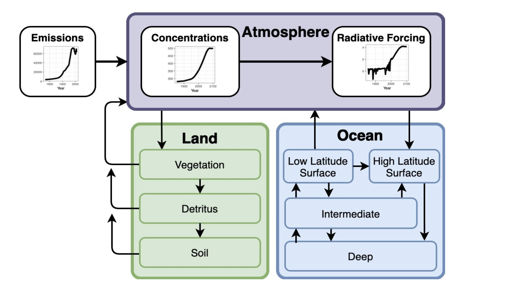
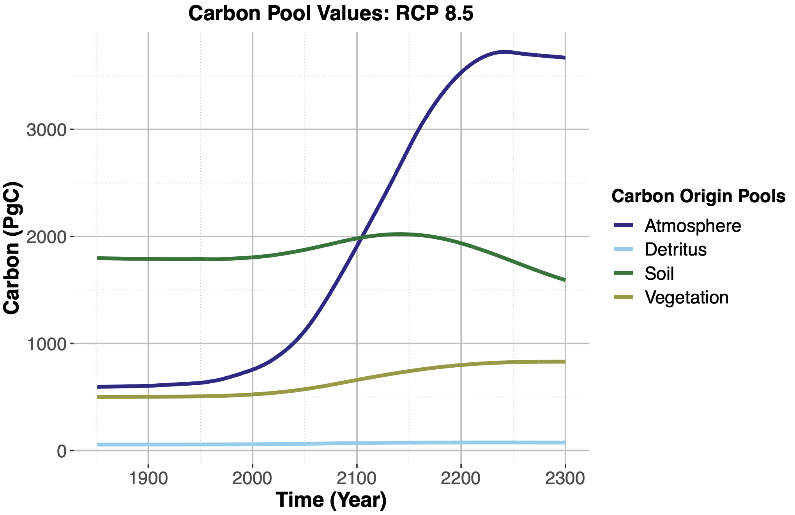
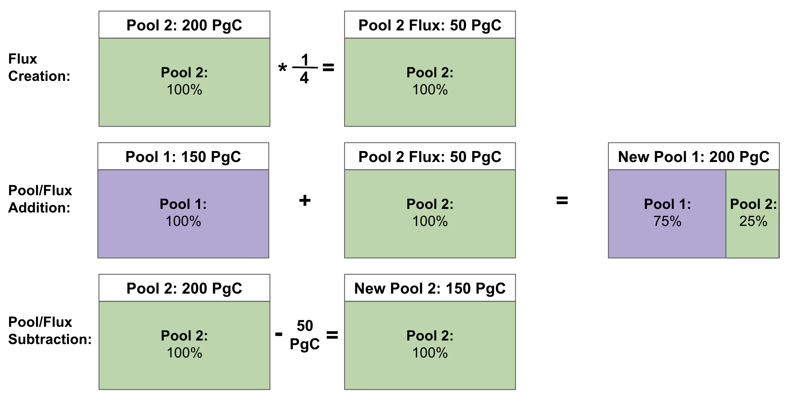

Introduction
Simple climate models (SCMs) are useful tools for exploring the global climate and carbon cycle (Calvin and Bond-Lamberty 2018).
They have reduced computational complexity compared to larger Earth System Models (ESMs), trading a lower temporal and spatial resolution for a significantly faster runtime and reduced computing power.
SCMs make it possible to quickly and efficiently conduct large-ensemble sensitivity studies, model coupling experiments, and policy analyses.
SCMs use data collected from the field and parameters determined from larger model runs in order to investigate the effect of various biogeophysical forcings on the global climate and carbon cycle.
One SCM is the open-source model Hector (Hartin et al. 2015).
Hector has active surface ocean chemistry, multiple terrestrial biomes, and is capable of running a variety of scenarios, including any of the representative concentration pathways (RCP), which show a number of different severity climate change scenarios (Moss et al. 2010).
In a given model run, Hector computes the state of each carbon pool (e.g. atmosphere, soil) based on the flow of carbon between pools as modified by anthropogenic climate change (Figure 1).

However, Hector does not currently have the capability to track the movement of carbon within the model—meaning that, for example, users cannot reconstruct the original source pools of the carbon in each pool at each timestep.
Instead, it only reports the total carbon stored in each pool at any given time step (Figure 2).

Here we describe the addition of a novel tracking capability to Hector's code base.
This allows Hector to track the origin of carbon within each of the model's carbon pools throughout the run, after a specified starting date.
Thus, at the end of the run, each pool's contents can be broken down by the original source pool (defined based on when tracking was enabled), allowing deeper exploration of carbon movement and transfer, and more robust benchmarking.
Below we describe how the code additions work technically, provide example tracking outputs for four major carbon pools, and discuss next steps in development and research.
Implementation and Technical Details
We modified the model's code to record the origin of the carbon within each pool, in addition to keeping track of the total amount of carbon.
When a user enables tracking within a model run, all of the carbon within each pool is marked as originating from that specific pool-e.g., all of the carbon within the atmosphere pool at that moment in time is tagged as originating from the atmosphere.
These tags do not change over time as they are associated with that particular mass of carbon, and follow the carbon as fluxes move it throughout the model.
Fluxes are created from an existing pool and have the same origin proportions as the pools they originate from-i.e., if we create a 25 petagram carbon flux from the atmosphere, we assume that the atmosphere pool is well-mixed and remove carbon in equal proportions from each of the origin sub-pools within the atmosphere.
The resulting 25 Pg C flux thus has the exact same origin fractions as the atmosphere at that point in time.
The addition of a flux to pool is what changes the origin proportions of that pool.
For example, if we add a 25 petagram flux of carbon from the atmosphere pool to the vegetation pool, 25 petagrams of carbon will be added to the total value of the vegetation pool, and the origin proportions of that flux carbon (which as noted above matches that of the atmosphere) are added to the vegetation pool's list of origins for its already existing carbon.
Subtraction is simpler as we continue our assumption that the pools are well mixed: we remove carbon from the pool in equal proportions to the carbon within the pool, simply decreasing the total value of carbon.
In this way, each pool keeps track of where its carbon originated from and we are able to watch the pools' composition change over time through these pool-to-pool transfers.

Hector tracks carbon in the atmosphere, vegetation, soil, detritus, and ocean; Hector can also run multiple terrestrial biomes.
We can also add additional pools, like fossil fuels, whose carbon we want to track.
Each of these pools is initialized with a starting amount of carbon at the beginning of a run and tracking is turned on at a time specified by the user.
For each time step within a run, we calculate all expected fluxes into and out of each pool (e.g. net primary production and land use change) and add/subtract these fluxes from our pools.
When tracking is on, the origin of the carbon in each pool is updated as described above.
If tracking is not on, the total amount of carbon within the pool is changed but the origin proportions stay the same.
This process, with a few additional adjustments, repeats every timestep.
If you would like more detailed technical information, please contact the author.
We also want to note that all of the changes to Hector's code are backwards compatible with previous versions of Hector and running Hector with tracking is completely optional.
When tracking is not enabled, adding and subtracting fluxes from a pool just functions as standard arithmetic operations that only keep track of the pool's overall value and not the carbons' origin fractions.